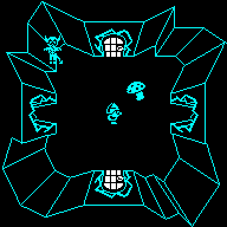
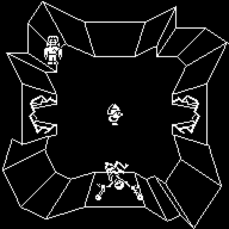

START_GAME hides the A.C.G. key's three pieces, places the green, red and cyan
keys and the mummy, and chooses which doors will open and shut by themselves,
all from the ROM's frame counter FRAMES. But ENTRY turns the interrupts off
as the game starts, and nothing turns them on until the first pass of
MAIN_LOOP -- after all of that has been chosen. FRAMES does not move on the
title screen, so the first game after loading is decided by how many frames
the loader took, whatever is pressed on the menu and whenever.
The loaded snapshot has FRAMES at $256F, which puts the pieces in
room $17, room $10, room $2B, the green key in room $22, the red key and the mummy
in room $85 and the cyan key in room $91 (the yellow is
always in room $66). Watched in the emulator: FRAMES read
$256F on the title screen and still did after three hundred turns of
its loop; a game started from there, as the knight, and another started after
choosing a different control option and the serf, both had exactly those
rooms. A
real Spectrum should do the same on every load, if its loader takes the same
number of frames (not checked on hardware).
Fewer castles than it seems
Even after the first game, the choices are narrower than they look.
PLACE_ACG_KEY and PLACE_KEYS add TICKS to FRAMES to pick their rooms, but START_GAME has
just cleared TICKS (CLEAR_VARIABLES), so the green key, the red key with the mummy,
and the set of rooms for the A.C.G. pieces all come from the same number,
FRAMES AND 7: eight arrangements, each always with the same partners. The
timed doors (CHOOSE_TIMED_DOORS) take their random bytes from a stretch of ROM chosen by
FRAMES AND 15, so each arrangement comes with one of two patterns of doors.
The cyan key is chosen from FRAMES' middle byte instead, which in play never
changes: TICK_CLOCK takes 50 off FRAMES every second, so its low byte never
reaches 256 to carry. It moves only while the interrupts are left on outside
play, and that happens after one kind of ending only: a game over caused in
the main loop -- by a creature, a big monster or a mushroom -- runs its
ten-second delay and the title screen that follows with interrupts on. Dying
of hunger happens inside FRAME_TICK, which has turned them off, and the end
screen follows PAUSE, which has too; after either, FRAMES stands still
until the next game begins.
Watched in the emulator, ending games in both ways from the first game after
a varying number of frames and starting another: after six games over by
hunger, FRAMES had not moved during the delay or on the title screen, the
cyan key was in room $91 every time, and the other keys and the
pieces followed FRAMES AND 7 through the table; after six games over by the
devil, FRAMES ran on through both, its middle byte reached $26 to $28, and the
cyan key went to $4C and $53. A win left FRAMES frozen too.
A touch that leaves nothing fills the roast
LOSE_FOOD_EIGHT and LOSE_FOOD_SIXTEEN, the big five's touches, subtract from the life force and
kill only when that borrows (JR C). A result of exactly zero is stored, and
the player lives. The next drain -- hunger in PLAYER_TICK, or a
mushroom -- does DEC A and tests for zero, and 0 minus 1 is 255: not zero,
so it is stored, and the roast on the scroll is full again, fuller than
eating can make it (EAT_FOOD stops at 240). It needs the life force at a
multiple of 8 (of 16 for the humpback) when the touching starts, which is
less rare than it sounds: every life starts at 240 and food adds 64 (how
often it happens in play was not counted). The small creatures' LOSE_FOOD_THIRTY_TWO
tests for zero as well as a borrow, so they cannot do it.
Watched in the emulator, with a watchpoint on the life force: set to 8, with
the devil put on the player, the store at $8A25 wrote 0 and the player
carried on; with the devil sent back to his own room, the next write was
the hunger drain's store at $8E88, 0 to 255, then 254, and the roast was
drawn whole.
One death, two lives
MUSHROOM, a mushroom, drains the player whenever he is within 12 pixels of it
(NEAR_PLAYER), without asking whether he is alive: it goes on while he sinks
into the floor. Dying to a big monster (LOSE_FOOD_EIGHT) or to hunger leaves the life
force where it was -- neither stores the final value -- so a mushroom beside
the body counts the last few units down, and on reaching zero it calls
LOSE_LIFE a second time and disappears (MUSHROOM_KILLED_PLAYER). One death costs two lives.
Watched in the emulator, staging only the room and keeping small creatures
away: the player put beside the mushroom in the devil's cave, room $43, with
a full life force, stood still. The devil arrived and ran the life force out with 6
left; LOSE_LIFE ran for the devil with three spare lives, and a few passes
later ran again for the mushroom, the player still sinking, with the life
force at 0. He rose with one spare life instead of two, and the mushroom was
gone. (A small creature's touch stores 0 before killing, and a mushroom's DEC
turns that into 255, so it takes only one life.)
The first piece of food never grows back
REGROW_FOOD refills eaten food, one of the eighty food records every 512 passes,
by stepping a cursor through them. It steps before it looks, and when the
step reaches the end it puts the cursor back on the first record and returns
without looking; the next step moves it to the second. START_GAME starts the
cursor on the first record too. So the first food record -- the one in
room $27 at the start of every game -- is never
looked at, and once eaten it is gone for good.
Watched in the emulator: with the first two records emptied and the cursor
on the last, TICKS was set so that the next four passes each opened the
gate. The cursor went back to the first record, then refilled the second
(with food $56), then went on; the first stayed empty. Moving the reset back
one record fixes it, and was tested the same way: the first record was
refilled at the next step.
POKE 39260,80
A second gravestone rubs out the first
When the player dies, DROP_GRAVESTONE puts a gravestone in the first free one of four
slots at the spot where he fell and draws it -- with XOR, like every moving
thing. The new life always rises at the same place in the room (PLACE_PLAYER
copies it from its template), so dying twice without moving puts two
gravestones in exactly the same place, and the second rubs the first out.
The two records are still there; a third makes one visible again. And the
four slots are never emptied, so after the fourth death there are no more.
Watched in the emulator: starved three times in a row standing where he
rose, the knight had a gravestone under him after the first death, none
after the second -- with two gravestone records holding the same room, x and
y -- and one again after the third.
The devil and Frankenstein's monster stand in the rock
The four big hunters are dispatched every pass wherever they are, and while
the player is not in play -- rising at the start of every life, the first
included, or sinking at the end of one -- they walk away from where he is
(BIG_MONSTER_STEP), up to 52 pixels from the centre: the limits in
DE, $3434, handed to STEP_ACTOR. That suits a square hall, whose walk
area reaches 56 pixels from the centre, but the devil and Frankenstein's
monster live in caves, whose walk area stops at 40. While the player rises in
the first room at the start of a game, both back off to about 50 pixels up and
left of their caves' centres, into the rock, and that is where the player finds
them on arriving; they walk out onto the floor from there.
Room $43: the devil at x $25, y $35

Room $55: Frankenstein's monster at x $25, y $35

Both pictures were drawn by the game's own code: a game started from the
title screen, and three seconds later the knight put at the centre of each
cave and the first pass of the main loop run. Watched in the emulator too:
arriving in each cave from the first game's start, the monster stood 49
pixels up and left of the centre after the first pass; and with the player
dying in the devil's cave, the devil backed away to 51 pixels down and right,
into the rock in the opposite corner, until the new life began.
Dracula forgets where he was going
Away from the player, MOVE_DRACULA writes $68, $68 into its +$0B and +$0C as a
place to walk to, and then calls HOME_IN -- which takes its target from DE,
not from the record. MOVE_MUMMY, the mummy, stores its targets in the same two
bytes and loads DE from them before the same call; Dracula's routine lacks
the two loads, and DE still holds $468A, the crucifix's sprite and colour
from the test just before. So off-screen Dracula walks to x $8A, y $46,
wherever he is, and that is where he stands when the player finds him. It
is harmless, and in a cave -- Dracula's random moves allow caves -- it puts
him 50 pixels right of the centre, in the rock.
Watched in the emulator over 600 frames of the first game: Dracula, in room
$68, walked from x $27, y $37 to x $8A, y $46 a pixel a pass, and kept that
position through moves to rooms $17, $45 and $55 -- the last of them a cave
-- while +$0B and +$0C read $68 throughout.
CONGRATULATIONT
$971F holds $D4. Bit 7 is the end-of-string marker, so the character is $54 --
"T" -- where it should be $53, "S". The screen a player sees on escaping the
castle reads CONGRATULATIONT.
It is not a misreading of the data. Both pictures below were drawn by running
the game's own end-of-game routine at SHOW_END_SCREEN, and the only difference between
them is that one byte.
As it ships
With $971F set to $D3
It survived because almost nobody saw it. Reaching this screen means finishing
the game: getting through the A.C.G. door, with all three pieces of its key,
into room $8E, which MAIN_LOOP checks for on every pass before it jumps to
SHOW_END_SCREEN. A machine playing the game at random never gets there, and a
code map built from playthroughs classified the whole routine as data until it
was picked apart by hand.